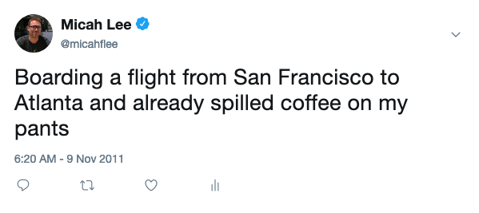
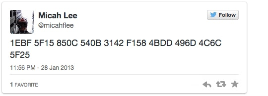

Semiphemeral: Automatically delete your old tweets, except for the ones you want to keep
In the almost 10 years that I've been using Twitter, I tweeted about 13,700 times, retweeted about 9,000 tweets, and liked (or "favorited", as we called liking back in the day) about 14,000 tweets. I decided to delete most of them using a tool I just finished programming called semiphemeral. Here is why, and how.
A lot of my classic tweets were... let's just say not exactly the highest quality.

But more than just low quality, I simply don't see many benefits to having a decade-long timeline that anyone who wishes to stalk me can easily access and use against me. For example, in response to me criticizing WikiLeaks, a troll searched my Twitter history for the word "jew", dug up this 2011 tweet about me attending a Jewish wedding, and tweeted it to me with some nonsense about my "tribe".

And finally, in addition to mediocre tweets and the potential for harassment, I'm sure I've had some bad takes over the years.
I care deeply about privacy. My default search engine is DuckDuckGo. At the moment, I carry an Android phone that doesn't have any Google apps on it. I host my email from my house. When I text with people on Signal I always set disappearing messages to one week, no matter the conversation. So... why should my social media posts be on the internet forever?
There are plenty of apps that make your tweets "ephemeral", where you can tweet like normal but everything older than, say, a month gets automatically deleted. I also found plenty of simple scripts on GitHub that do this, for those who don't want to give a third party access to their Twitter account.
I looked into a few options but realized none of them would work for me because I don't actually want to delete all of my old tweets. Some of them I'm quite proud of. Like that time I secretly tweeted the PGP fingerprint for Laura Poitras, at the request of Edward Snowden in the early stages of his whisleblowing, so he could be more confident that his communications with her weren't getting man-in-the-middled.

I've also written several twitter threads that I like and don't want to delete, and that even get cited by others. I wrote a massive thread full of the sick misogynist details from leaked internal WikiLeaks DMs; a short thread about the time police broke into Chelsea Manning's house with guns drawn for a "wellness check"; a thread detailing everything that is publicly known about supply chain attacks; a thread about a 2-year-long honeypot laptop project I did to try to detect evil maid attacks; among many others. And there are other tweets I don't want to delete too -- I don't mean to brag but occasionally I say something incredibly clever. And there's the tweet that cryptographically proves that the person who controls my Keybase account also controls my Twitter account.
I realized that I didn't want ephemeral tweets, I wanted semiphemeral tweets. I want to automatically delete my old tweets except for those that meet specific criteria: if a tweet has more than a specific thresholds of retweets or likes, keep it. Also keep any other tweets that are part of a thread that includes a tweet I'm preserving -- I don't want to only keep the first tweet that passes the tweet/like threshold but then delete all the replies, or otherwise lose context. And of course, I wanted a way to tag specific tweets for exclusion from deletion.
So, I programmed semiphemeral to do just that. The code is licensed under MIT and programmed in python. Everyone is welcome to use it, but you'll need some tech skills to do so. It's a command line tool, not a service. And to use it, you need to generate Twitter API credentials with your Twitter account (roughly following these instructions) -- this means you'll be interfacing with the Twitter API directly, rather than giving some third party permission to access your Twitter account. It will work fine to run on your laptop, but if you want to make it automatically delete old tweets going forward, you'll probably want to schedule it to run on a daily cron job on a server somewhere.
You can install it with pip:
$ pip3 install semiphemeral
Here's how to use it:
$ semiphemeral
Usage: semiphemeral [OPTIONS] COMMAND [ARGS]...
Automatically delete your old tweets, except for the ones you want to keep
Options:
--help Show this message and exit.
Commands:
configure Start the web server to configure semiphemeral
delete Delete tweets that aren't automatically or manually excluded
fetch Download all tweets
stats Show stats about tweets in the database
When you run semiphemeral configure, a local web app starts (powered by flask) which you load in a web browser. From here you can configure semipheral with both your Twitter API credentials, as well as the settings you want to use -- how old tweets are when they should get automatically deleted, what the retweet and like thresholds should be, as well as when to automatically unretweet and unlike old tweets.
Here's what the settings web page looks like:

This web app also has an interface that lets you view all tweets that are staged for deletion a page at a time, filter the text of the tweets for words and phrases to quickly find specific ones, and manually exclude any tweets you choose from deletion.
After configuring your API creds, you must download your entire timeline from Twitter by running semiphemeral fetch. This may take a very long time the first time if you have a lot of tweets. Semiphemeral will automatically pause, sometimes for up to 15 minutes at a time, when it hits the Twitter API's rate limit. (All the Twitter API code is powered by tweepy), and it saves your entire history of tweets, as well as all the tweets from threads you've interacted with, in a sqlite database. The database code is powered by SQLAlchemy.
(Side note: Did you know that Twitter "threads" are actually trees, from a data structure perspective? If a tweet is not replying to any other tweet, it's the root of the tree. It can have an arbitrary number of replies, and each of those replies can have an arbitrary number of replies of their own, which are the branches. If I replied to someone but their account has since been suspended or they deleted the tweet I replied to, my tweet is an orphan, and there's no easy way to determine what the root of its thread actually was.)
And finally, after you're sure you've configured the settings you want and have sifted through all your old tweets and manually excluded any specific tweets from deletion, you may want to download your Twitter archive for safe keeping. Then, run semiphemeral delete to delete all of your old tweets, except for the ones you want to keep. This, too, might take a long time the first run. I've designed it to put semiphemeral delete in a daily cron job, to continue to delete old tweets going forward.
At the moment tweepy has a bug that prevents the direct message API from working. But once that's fixed (or maybe before, if I have time and am feeling adventurous) I plan on adding a feature to also automatically delete all old direct messages.
Settings are stored in ~/.semiphemeral/settings.json. All tweets (including exceptions, and deleted tweets) are stored in a sqlite database ~/.semiphemeral/tweets.db.
Now that I've deleted about 90% of my tweets, and all retweets that are newer than the past month, I feel like my Twitter account is in a much cleaner state than it was before, and there's so much less historical information about my daily likes and politics available to anyone who chooses to look than there used to be. I think I'm going to enjoy semiphemeral tweeting.
$ semiphemeral stats
semiphemeral 0.1
Statistics
{
"is_configured": true,
"last_fetch": "2019-06-05 07:39AM",
"my_tweets": 1353,
"my_retweets": 127,
"my_likes": 3987,
"deleted_tweets": 12005,
"deleted_retweets": 8917,
"unliked_tweets": 2365,
"excluded_tweets": 192,
"other_tweets": 9537,
"threads": 3949
}